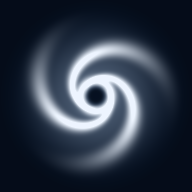

Como funciona o Olho do Furacão
Jogue coisas no furacão e veja girar, para Android
Um furacão visto de cima gira no meio da tempestade. Coisas aparecem pela tela: arraste e jogue no furacão. Elas entram na espiral, giram cada vez mais rápido, vão encolhendo e somem no olho. Não tem pontos, fases nem pressa: é para relaxar e ficar olhando.
Jogar as coisas
- Arraste e solte: a coisa voa com a velocidade do seu dedo. Solta devagar fora do furacão, ela fica parada onde está.
- Toque num espaço vazio para criar uma coisa nova ali. Dentro do furacão, ela já cai girando.
- Pegue de volta uma coisa que ainda não chegou perto do olho e jogue de novo.
- Coisas grandes se desmancham perto do olho: a casa vira telhas, tábuas e tijolos, o carro solta as rodas, a árvore perde as folhas, o boneco de neve vira bolas de neve. Os pedaços continuam girando até sumir.
- O contador "Engolidos" mostra quantas coisas o furacão já engoliu, somando todas as vezes.
Cenários
No menu, em Cenário e coisas, escolha o céu. Ele muda na hora, com o furacão girando atrás.
- Tempestade: nuvens cinzentas, chuva, relâmpagos e trovões.
- Noite estrelada: nuvens azuladas, lua, estrelas piscando e estrelas cadentes.
- Pôr do sol: céu do roxo ao laranja e nuvens rosadas.
- Areia: uma tempestade de poeira, com grãos de areia voando.
- Redemoinho: um redemoinho no mar, com faixas de espuma.
- Buraco negro: um disco de fogo girando no espaço, do branco quente ao roxo.
Pacotes de coisas
São 48 coisas em 6 pacotes. Ligue um ou vários de uma vez (pelo menos um fica sempre ligado):
- Variadas: vaca, casa, carro, guarda-chuva, árvore, cadeira, pato, bola, peixe, livro, xícara, meia, pizza, placa, banana e vaso.
- Fazenda: vaca, porco, galinha, ovelha, trator, celeiro, feno e milho.
- Cozinha: xícara, pizza, panela, frigideira, garfo, bule, torradeira e bolo.
- Escola: livro, lápis, régua, mochila, globo, tesoura e maçã.
- Brinquedos: bola, patinho, ursinho, pião, robô, pipa, dado e bloco.
- Natal: pinheiro, presente, bengala doce, boneco de neve, gorro, estrela, sino e meia.
Só olhar
O botão da espiral, no alto da tela do jogo, liga o modo automático: as coisas são jogadas sozinhas no furacão, para você só ficar olhando. O botão ao lado liga e desliga o som. A seta à esquerda volta para o menu.
Opções
- Volume do vento, do uivo e dos trovões.
- Velocidade do furacão: quanto as nuvens e as coisas giram.
- Força de engolir: com mais força, a coisa vai rápido para o olho; com menos, ela dá mais voltas antes de sumir.
- Sobre o app: versão, política de privacidade, contato e as licenças de código aberto.
Feito pelo próprio app
As nuvens, a chuva, as coisas e os sons são desenhados e tocados pelo próprio app, na hora, sem imagens nem gravações. O app funciona sem internet, não tem anúncios nem compras e não coleta nenhum dado.